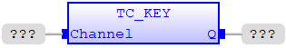
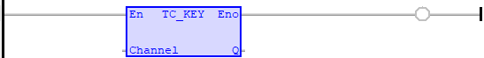

System Function
Interrogates character count of the specified channel number.
|
Channel : INT; |
Channel number. |
|
Q : DINT; |
Character count in the channel. |
TC_KEY is used to check if there are characters in a channel buffer. This command does not read the character but allows the program to test if any character has arrived.
TC_KEY ( Channel (*INT*) );

